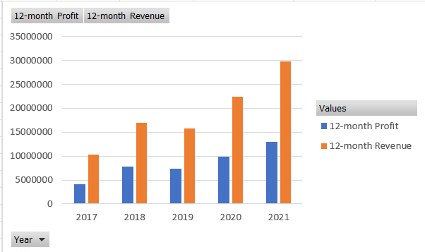

MY SKILLS
| Skill | Proficiency Level |
|---|---|
| Python & Machine Learning | Intermediate |
| SQL & Database Management | Intermediate |
| Microsoft Excel (Data Processing) | Intermediate |
| Statistics & Exploratory Data Analysis (EDA) | Intermediate |
| Data Visualization | Intermediate |
| Analytical & Critical Thinking | Intermediate |
| Presentation & Communication Skills | Intermediate |
LATEST PROJECTS
Project Manager
16 ProjectsLMS PM 2 Term of Reference (TOR)
Covers background, objectives, module scope, PIECES analysis, benefits, deliverables, 4-week timeline, and cost simulation.
View Project ➔LMS PM 2 Business Case
Outlines problem context, strategic goals, success criteria, assumptions, constraints, Rp3,500,000 budget simulation, 4-week schedule, and risk mitigation across five modules.
View Project ➔LMS PM 2 Project Charter
Defines objectives, scope for Role, Submission, Grading, Quiz, and Report modules, deliverables, risks, milestones, and authorization.
View Project ➔LMS PM 2 Project Scope Statement
Specifies project rationale, product features, access control rules, data consistency requirements, and documentation standards for the five PM 2 modules.
View Project ➔LMS PM 2 Statement of Work (SOW)
Details work objectives, five-module scope, 12 deliverables, execution phases, 4-week schedule, cost estimate, acceptance criteria, and risk mitigation.
View Project ➔LMS PM 2 Work Contract (Kontrak Kerja)
Establishes agreement terms, five-module scope, eight deliverables, 4-week timeline, Rp3,500,000 simulation value (40%/60% payment), acceptance, and change rules.
View Project ➔LMS PM 2 Technical Proposal
Presents technical approach, module flow (Task-to-Submission-to-Grading-to-Report), execution schedule, team structure, and budget simulation.
View Project ➔LMS PM 2 Work Breakdown Structure (WBS)
Structures the PM 2 sub-project into 4 work packages, 15 sub-packages, and 43 activities across 4 weeks, mapped to scope, 12 deliverables, milestones, budget, and risks.
View Project ➔LMS PM 2 Time Scheduling Plan
Defines schedule control rules, 43 WBS tasks, dependencies, resource assignments, workday durations, Gantt chart, and M-1 to M-4 milestones.
View Project ➔LMS PM 2 Budget Plan (RAB)
Organizes bottom-up cost estimates, Rp2,900,000 cost baseline, Rp600,000 risk reserve (Rp3,500,000 ceiling), phase allocations, and PV/AC/CV tracking.
View Project ➔LMS PM 2 Human Resources Management
Defines team organization, role descriptions, phase allocations (Oct 5 – Nov 1, 2026), RACI matrix, and coordination controls.
View Project ➔LMS PM 2 Plan Quality Management
Sets requirements conformance and usability standards, module quality plans, metrics, QA procedures, and quality assurance roles.
View Project ➔LMS PM 2 Plan Procurement Management
Covers procurement scope, Make or Buy analysis, contract terms, vendor evaluation criteria, support list, 4-week schedule, and procurement risks.
View Project ➔LMS PM 2 Risk Management Plan
Identifies 10 risks across scope, module dependencies, deliverables, schedule, and budget simulation, complete with ratings and mitigation steps.
View Project ➔LMS PM 2 Communication Strategy
Maps meeting schedules, progress, integration, change, issue, and final reports, communication channels, and stakeholder information matrix.
View Project ➔LMS PM 2 Project Management Plan
Consolidates WBS, change control, schedule, cost baseline, quality management, RACI, communication, risk and issue logs, procurement, and compliance.
View Project ➔Enterprise Architecture
2 ProjectsTOGAF ADM Enterprise Architecture — RSUD Kota Tangerang Selatan
Midterm EA report (SI5A, Group 1) for RSUD Kota Tangerang Selatan's Integrated Outpatient Service from Preliminary through Phase D, including gap analysis and traceability.
View Report ➔Enterprise Architecture Presentation — Layanan Rawat Jalan Terpadu
24-slide EA deck (Group 1, SI5A) summarizing Preliminary Phase and Phases A–D for RSUD Kota Tangerang Selatan.
View Presentation ➔Supply Chain Management
1 ProjectDemand Forecasting & Error Evaluation (MAE, MSE & WMA)
Monthly demand forecasting (3-month, 5-month moving averages, and Weighted Moving Average) with MAE and MSE evaluation on 2014 demand and 1994–2004 annual sales in Excel.
View Workbook ➔Data Analytics & Machine Learning
10 ProjectsCrab Age Prediction
Exploratory data analysis in Python to examine crab physical traits and identify anomalies.
View Project ➔
Salary Prediction
End-to-end machine learning workflow predicting employee salaries using Linear Regression.
View Project ➔
Exoplanet EDA
Data preparation and exploratory data analysis on exoplanet datasets for anomaly detection.
View Project ➔
Bike Sales Analytics
Cleaned and analyzed over 113,000 rows of bike sales transactions across lab exercises.
View Project ➔Bigfoot Sightings EDA
Exploratory data analysis and data cleaning on 4,642 historical Bigfoot sighting records.
View Dataset ➔ View Data Cleaning ➔Data Mining Competency Check (Altair AI Studio)
Covers Decision Tree classification (Golf, Iris, Pemilu), RMSE estimation (CPU, Heating Oil), FP-Growth association, and stock price forecasting.
View Project ➔Decision Tree Classification — Contact Lenses Dataset
Calculated Entropy, Weighted Entropy, and Information Gain on 24 records to derive rules with tear-prod-rate as root and astigmatism as branch.
View Project ➔Classification Model Evaluation (Confusion Matrix)
Evaluated Confusion Matrix metrics, Type I/II errors, Accuracy, Precision, Recall, and F-Measure on spam email and mango sorting case studies (1,000 items each).
View Project ➔K-Means Clustering & Internal Cluster Evaluation
Tested K-Means (k=3, 4, 5) on the Iris dataset in RapidMiner using Multiply and evaluated clusters via Davies-Bouldin Index, Dunn Index, and centroid distance.
View Project ➔Data Pre-processing & Cleaning Workflows
Built RapidMiner workflows using Remove Duplicates and Filter Examples to handle missing values, noise, and outliers across three datasets.
View Project ➔Business Intelligence & Storytelling
2 Projects
Global Superstore
Interactive BI dashboard tracking sales trends, profitability, and regional performance.
View Project ➔
Spotify: Taylor Swift
Data storytelling dashboard exploring streaming trends and song characteristics.
View Project ➔Database & Information Systems
15 ProjectsGojek Database & Infrastructure Design
Designed a cloud and relational database schema across six core tables with cardinalities.
View Project ➔Advanced Programming & Relational DB Book
Co-authored a textbook covering algorithms, loops, and branching in C, C++, and Python alongside SQL and relational algebra.
View Project ➔Microsoft Access Database Modules
Compiled 9 relational database modules covering individual practicums (Practicum 1–9) and a group project.
View Project ➔Course Registration System UML Design
Modeled a student course registration system with UML diagrams, database mappings, and object-oriented test cases.
View Project ➔PT Leschaco Logistic Business Process Analysis
Mapped core logistics workflows, event logs, As-Is BPMN flows, and ERP-WMS integration for PT Leschaco Logistic Indonesia.
View Project ➔Bank Mandiri Taspen Process & Lean Six Sigma Analysis
Analyzed pension credit workflows using BPMN, Cycle Time Efficiency, queuing, Pareto, and PICK analysis to reduce bottlenecks.
View Project ➔PHI-Minimart SQL & Data Analysis
Ran 30 SQL queries across eight OLTP tables covering filters, aggregations, joins, top items, and branch revenue.
View Project ➔Integrated Polyclinic Queue UML Redesign
Redesigned a polyclinic queue system with activity, use case, class, and sequence diagrams across patients, admin, doctors, and pharmacists.
View Project ➔Store Relational Database & SQL Exercises
Modeled a six-table retail schema and completed 30 SQL queries using aggregations, sorting, and INNER, LEFT, RIGHT, and NATURAL joins.
View Project ➔Retail Store Relational Schema & 30 SQL Queries
Executed 30 basic, aggregate, and multi-table JOIN queries on a six-table store schema with verified query results.
View Project ➔Cleo ERP System Design — PT Sariguna Primatirta Tbk.
Designed a six-module ERP system (HR, Sales, Production, Inventory, Purchasing, Finance) using RAD, BPMN, PIECES, SoD, and three-way matching.
View Project ➔Enterprise ERP Process & Relational Database Design
Created Use Case, Activity, Sequence, and Class diagrams with logical and physical relational schemas across six ERP modules.
View Project ➔Enterprise ERP Multi-Module Interface Design
Designed UI mockups and dashboards for HR payroll, POS invoicing, production work orders, inventory, procurement, and finance.
View Project ➔ERP Production Module Architecture — PT Sariguna Primatirta Tbk.
Blueprint for a centralized ERP Production Module with IoT sensors, LIMS quality locks (<10 ppm TDS), BPMN, UML, 12-table schema, and ERPNext UI.
View Report ➔ERP Production Module Presentation — Cleo Pure Water
92-slide deck covering DDPP, Dynamic BOM, IoT & LIMS quality control, As-Is/To-Be BPMN, SWOT, PIECES, UML, database schema, and ERPNext UI.
View Presentation ➔AI Governance, Ethics & Career Editorial
10 ProjectsCOBIT 2019 IT Governance Audit — PT Noohtify
IT governance audit using COBIT 2019 Goals Cascade, Design Factors (DF1–DF10), RACI, Guttman capability scoring, and gap analysis.
View Report ➔COBIT 2019 IT Governance Audit Presentation — PT Noohtify
35-slide audit deck covering Goals Cascade, DF1–DF10 evaluation, Design Toolkit prioritization, and journal draft.
View Presentation ➔Career Compass Expo 2025 Coverage
Article covering UIN Jakarta's Career Compass Expo, including the job fair, CV and interview workshops, and Localpreneur Fest.
View Project ➔PintarKarier RAG Career Portal Essay
Essay proposing a context-grounded RAG career service aligned with SKKNI competencies, UU PDP, and AI ethics.
View Project ➔Content Creator as a Gen Z Career Path
Explores how students and fresh graduates leverage digital portfolios and content creation amid tight formal job markets.
View Project ➔Corporate Social Responsibility in IT
Reviews IT corporate social responsibility across Green Computing, e-waste handling, data ethics, and Tech for Good.
View Project ➔Turning Campus Confusion into Career Steps
Reflects on navigating early career uncertainty through career expos, networking, workshops, and practical skill building.
View Project ➔Ethical RAG Public Employment Service Proposal
Proposal for Gen Z skill-gap diagnostics, privacy-by-design data governance, and multi-agency implementation.
View Project ➔IT Social Responsibility & Tokopedia Case Study
Examines IT CSR regulations, Green Computing practices, and data-breach ethics based on the 2020 Tokopedia case.
View Project ➔More in Progress
Working on new datasets and upcoming projects to add to this portfolio.
Stay Tuned